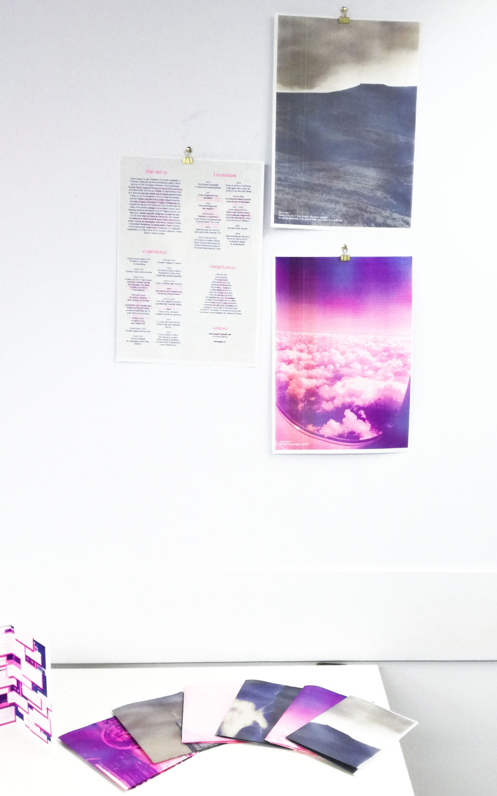
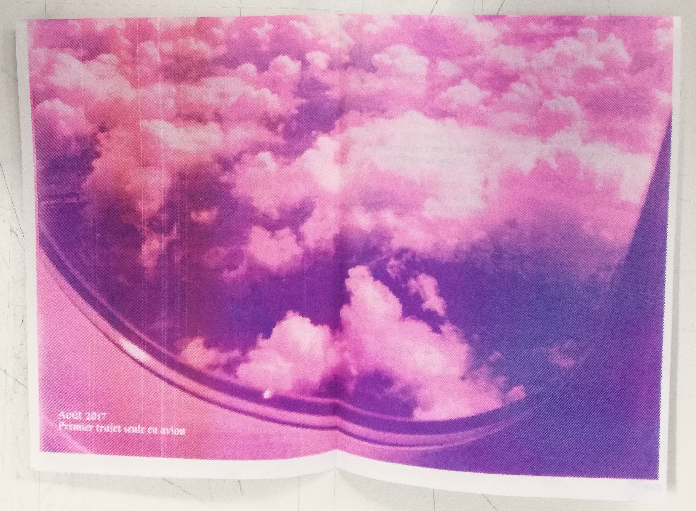
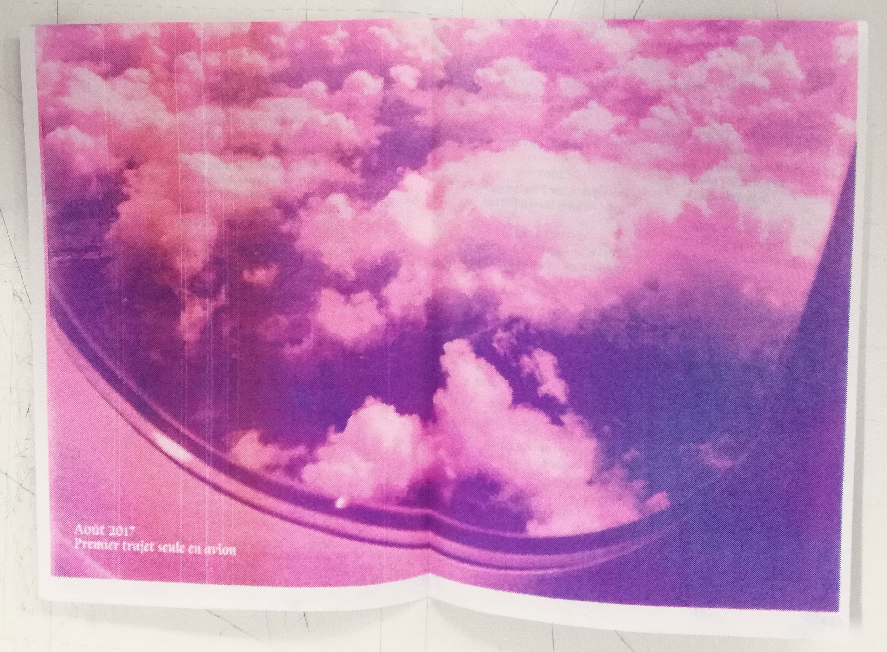
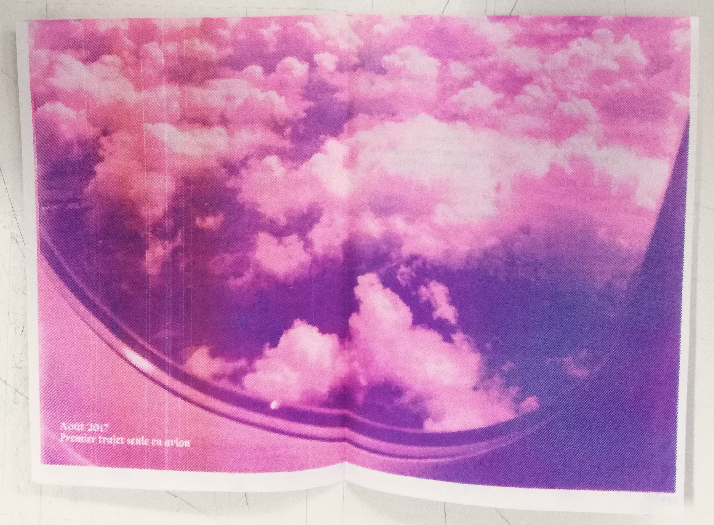

My life, my work
//
Le but de ce projet était d'imaginer un curriculum vitae qui parle de tout ce qu'un CV habituel ne dit pas. De toutes les petites choses qui nous définissent et font de nous ce que nous somme. Écrire un CV qui parle de soi est une expérience difficile, et l'introspection nécessaire est parfois difficile à assumer. Difficile de se dévoiler aux yeux du monde. J'ai finalement décidé pour ce projet de reprendre comme base existante mon CV scolaire et professionnel. Puis, j'ai choisi d'y surimprimer un CV plus personnel, qui parle non pas de mes formations, de mes expériences professionnelles, mais de tout ce qui me définit en dehors de ça. Mes compétences "inutiles", les choses que j'aime, les différentes expériences, accidents, voyages, etc, qui ont fait de moi ce que je suis, indépendamment de tout parcours scolaire. Mes CVs ainsi créés se présentent sous forme de poster A3, où le CV est imprimé au recto, et au verso, une photo en grand format d'un des éléments de celui-ci, en bichromie. J'avais envie ainsi de proposer un objet qui intrigue lorsqu'on le reçoit, qui offre une première vision, sous un seul angle de moi, pour ensuite s'ouvrir à tout ce qui me définit au dos du poster.
This project was to imagine a curriculum vitae, that shows all the stuff we can't write on a normal CV. All the littles things that make us, and show who we are. I decided to use my real CV as a base, and to print on top, with the risography process, a CV more personal, not about my education, and professional experiences, but about every other things that define me. Like "useless" skills, things I like, life experiences, accidents, travels… Theses CVs are A3 posters, with the text on one side, and a photography on the other side, representing one of the experiences I wrote in the CV.



 


